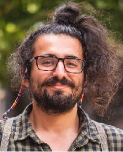

I am a second year Ph.D. student in the Department of Political Science at Washington University in St. Louis. I have a MA in Political Science (2019, Koc University), and BA's in International Relations and Economics (2017, Koc University).
My broader research interests include
- comparative politics,
- political methodology, and
- formal theory.
More specifically, I am interested in 1) political accountability and delegation, 2) political economy of redistribution and perceived corruption, and 3) social movements and protests. You can find my published work and working papers under Publications.
In my master’s thesis (co-advised by Prof. Erdem Yoruk and Prof. Belgin San-Akca and defended in May 2019),I examined how social assistance provision is shaped by contentious and elecotral politics. Employing a multi-method approach, I utilized both quantitative and qualitative analysis. In the quantitative portion, I investigated the impact of number of protests on social assistance coverage by using instrumental variable estimation with administrative-level panel data. In the qualitative portion, I leverage the insights gained from a comprehensive content analysis of legislative documents and secondary sources to substantiate my econometric analyses and interviews. In the final chapter of my thesis, I conducted a comparative analysis of Brazil, South Africa, and Turkey to place South Africa within a broader context with a higher external validity.

Second Year Phd Student
Political Science Department
Washington University in St. Louis
One Brookings Drive
Saint Louis
MO, 63130
Publications
Articles in Peer-Reviewed Journals
- "The politics of social assistance in South Africa: How protests and electoral politics shape the Child Support Grant (2020). Governance." E Yörük, AŞ Gençer
- "Democratic BRICS as role models in a shifting global order: inherent dilemmas and the challenges ahead (2018). Third World Quarterly 39 (9), 1791-181." Z Öniş, AŞ Gençer
Articles under Revision
- "Politics of Social Assistance Provision: Contentious Politics and Child Support Grant Provision in South Africa." AŞ Gençer, B San-Akca, E Yoruk
- "Welfare State Regimes in the Developing Countries." E Yoruk, AŞ Gençer
Working Papers
- "Gridlocks and the Rise of the Authoritarian." J Fox, AŞ Gençer
- "Confronting the corrupt when electoral institutions are on fire: When do voters stake a claim on their votes?" AŞ Gençer, Y Magiya
Datasets
- "Global Welfare Dataset, Version 2019. Codebook.". E Yörük, GR Tafoya, İ Öker, A Bargu, AŞ Gençer, R Çemen, F Kına, Ç Yoltar, B Gürel, M Koyuncu
Get Back to Home
Projects and Employment
Projects Prepared and Presented in Workshops
- "`Wag the Dog’ Media: Does the President Distract the Public When Issuing Executive Orders?. Prepared and Presented in 2020 Summer Python Workshop (October 8, 2020) at Washington University in St. Louis" AŞ Gençer
Employment Experience
- "`Wag the Dog’ Media: Does the President Distract the Public When Issuing Executive Orders?. Prepared and Presented in 2020 Summer Python Workshop (October 8, 2020) at Washington University in St. Louis" AŞ Gençer
Volunteering
- "`Wag the Dog’ Media: Does the President Distract the Public When Issuing Executive Orders?. Prepared and Presented in 2020 Summer Python Workshop (October 8, 2020) at Washington University in St. Louis" AŞ Gençer
Get Back to Home
Courses Taken and Skills
Projects Prepared and Presented in Workshops
- "`Wag the Dog’ Media: Does the President Distract the Public When Issuing Executive Orders?. Prepared and Presented in 2020 Summer Python Workshop (October 8, 2020) at Washington University in St. Louis" AŞ Gençer
Employment Experience
- "`Wag the Dog’ Media: Does the President Distract the Public When Issuing Executive Orders?. Prepared and Presented in 2020 Summer Python Workshop (October 8, 2020) at Washington University in St. Louis" AŞ Gençer
Volunteering
- "`Wag the Dog’ Media: Does the President Distract the Public When Issuing Executive Orders?. Prepared and Presented in 2020 Summer Python Workshop (October 8, 2020) at Washington University in St. Louis" AŞ Gençer
Get Back to Home